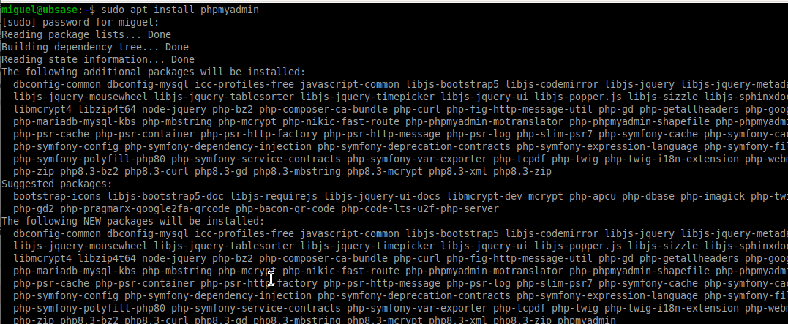
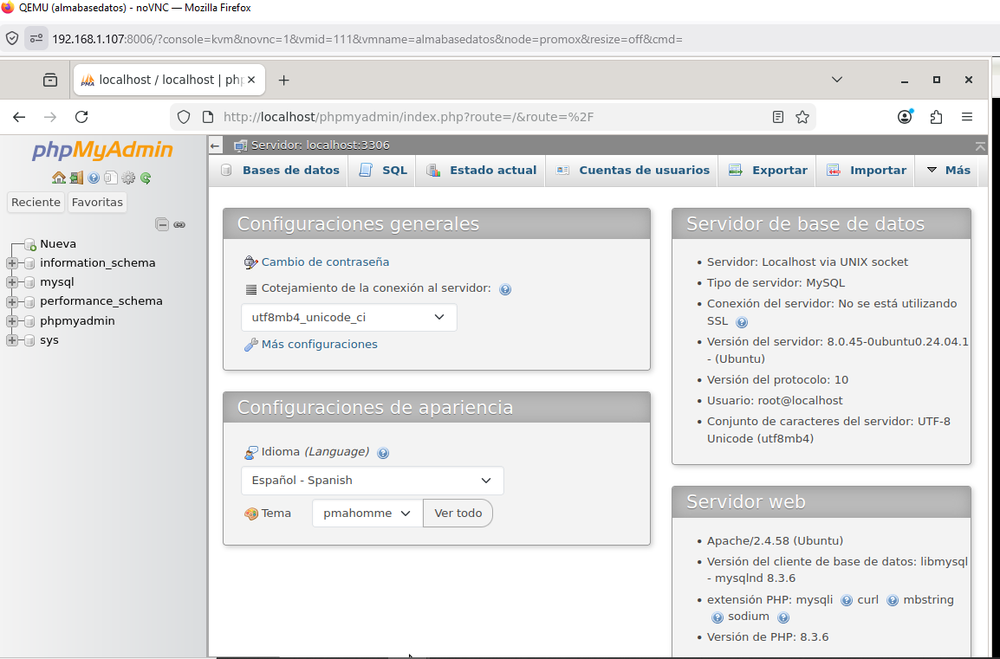

En esta práctica se instala phpMyAdmin y se comprueba su funcionamiento mediante acceso desde navegador, permitiendo la gestión gráfica de bases de datos MySQL.
Se ejecuta el siguiente comando:
sudo apt install phpmyadmin

Captura ABD18: Instalación de phpMyAdmin.
Durante la instalación aparecen varias opciones importantes:
apache2, ya que es el servidor utilizado.
Yes para que phpMyAdmin configure
su base de datos automáticamente.
Estas opciones permiten una instalación rápida y funcional sin configuración manual.
Se accede desde un navegador web mediante:
http://localhost/phpmyadmin (desde el servidor)http://IP_DEL_SERVIDOR/phpmyadmin (desde cliente)Se introducen las credenciales configuradas previamente (root o usuario creado).
Si todo es correcto, se muestra la interfaz gráfica de phpMyAdmin.

Captura ABD19: Acceso a phpMyAdmin.
La instalación de phpMyAdmin se ha realizado correctamente, permitiendo la gestión de bases de datos de forma gráfica mediante navegador.
Se ha comprobado el acceso tanto en local como desde otros equipos, validando el funcionamiento del sistema en un entorno cliente-servidor.
Durante la práctica se ha configurado un entorno completo compuesto por:
Todos los servicios se instalan en el servidor (Ubuntu Server), mientras que el acceso se realiza desde un cliente mediante navegador web.
Esto corresponde a una arquitectura cliente-servidor:
Este tipo de configuración es la base de la mayoría de aplicaciones web actuales.